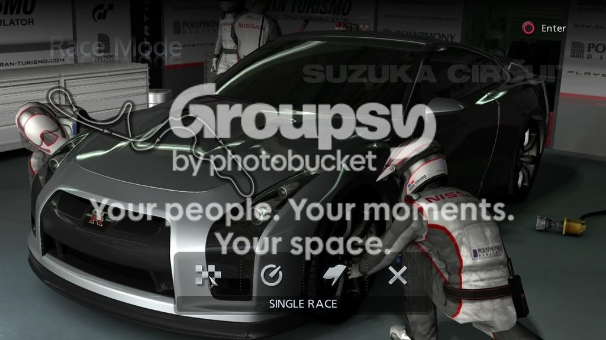
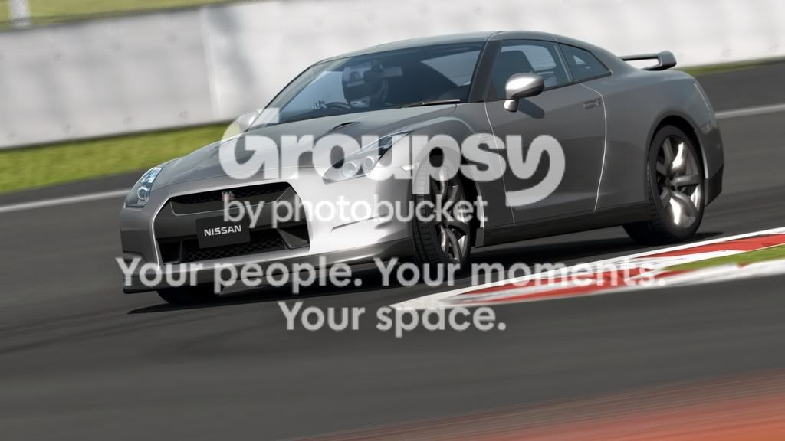
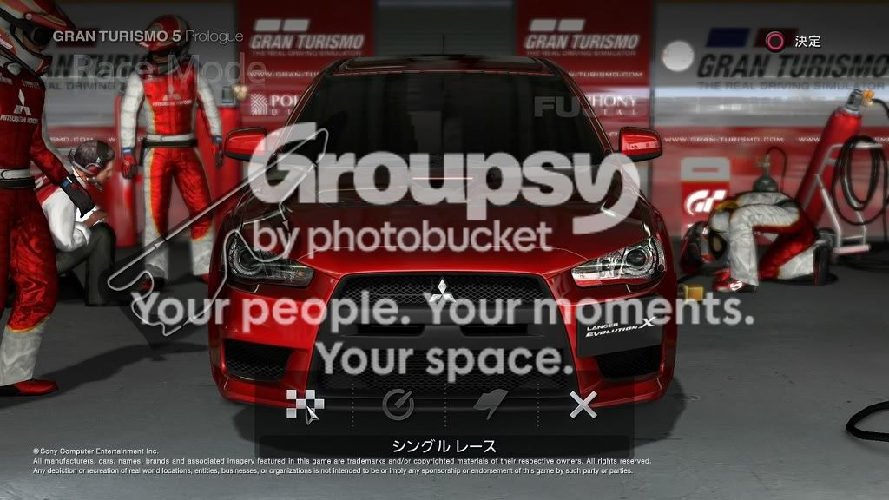

I think Gran Turismo is the best. Each car has 200,000 polygons!!!!
Here are some Screenshots:
Here are some Screenshots:



| Gran Turismo 5 Prologue | 7 |
| Forza Motorsport 2 | 0 |
| Burnout Series | 7 |
| DiRT | 0 |
| ATV Off Road Fury 4 | 0 |
| Other | 20 |





Quote: Chase, December 06, 2007 07:20 pm1. Sonic Riders was a pile of ****
2. Trackmania > All
3. Anything else? Maybe ToCA.

Umm... why is this in Images?
I don't know.
There's this game that like no one has heard of for the Playstation 2 (my first game for it).I have that game (got it for free), but it doesn't work.
It's called Rumble Racing. I love it. My favorite [racing] game of all time.
I do like the Gran Turismo series, though. Especially the soundtrack on GT4.

Dear lord, are those actual in-game screenshots? Man... the second car looks insanely detailed and photo-realistic.
Trackmania Nations - infinite fun to play, who cares about graphics?
Agreed.Need for Speed?Yes, the best racing series ever
Trackmania Nations - infinite fun to play, who cares about graphics?i beg to differ - i think trackmania has pretty cool grafix. it would look terrible if it had beastly ones like GTR

Agreed.Need for Speed?Yes, the best racing series ever
But those screenshots of Gran Turismo 5 are amazing.
excuse me, used to play it with 640*480 at low details, running with GeForce FX5500, that lame graphics are normal to meTrackmania Nations - infinite fun to play, who cares about graphics?i beg to differ - i think trackmania has pretty cool grafix. it would look terrible if it had beastly ones like GTR
- i was really thinking about it on full as thats what its ment to be on, but anygame on that resolution will suffer. its still the gameplay thats the most important and that wins